Published: 2022-09-29
Original link: https://www.cnphotos.net/academy/show-96.html
If you do not want to travel far over mountains, a forest is a great subject. Every place has a wood, large or small, and if you know how to shoot it, you can get a big-scene feel.
The hardest part is how to shoot a clean, orderly frame out of a jumble of trees.
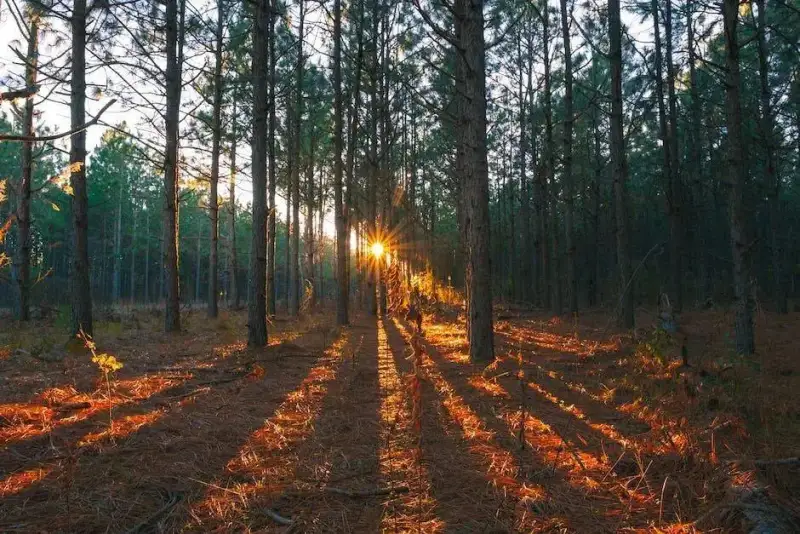
When you shoot a large, rolling wood, first find a high vantage point from a distance and shoot downward, to highlight the overall power of the forest.
This method usually puts the horizon in the top third of the frame or higher, or simply uses a filled composition so the forest fills the whole frame.
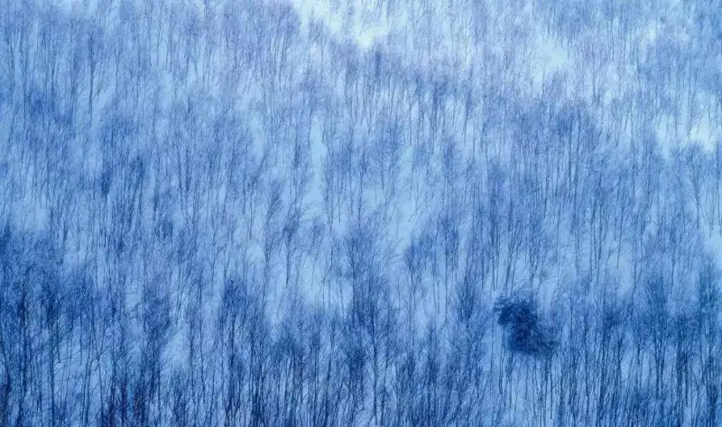
But a frame filled only with trees can look flat, so add some variation.
Shoot in early morning and use the mist to give the frame more depth and a hazy, mysterious beauty.
Use trees as a foreground. The contrast of sharp and blurred, and of large and small, creates strong depth.
Use light and shadow to create differences across the frame.
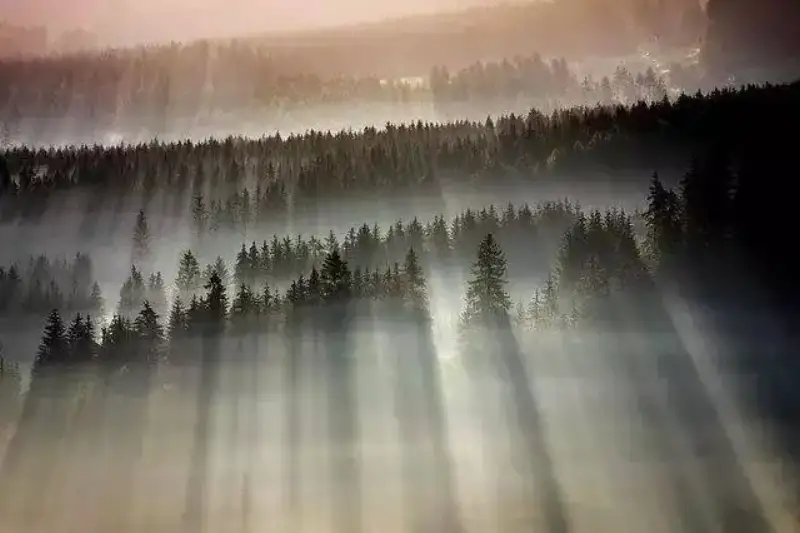
You can also pay more attention when framing to include some unusual highlights.
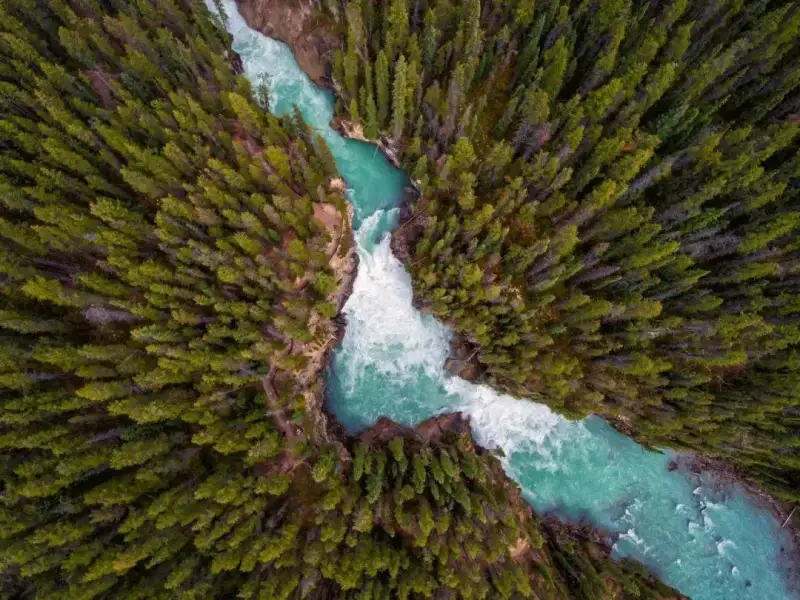
If the full panorama looks messy, crop a section of the rolling terrain and present it with a diagonal composition.
This not only emphasizes the terrain, the diagonal composition also makes the frame more lively and creates a sense of extension to both sides.
Because near objects look large and far ones small, walking into the wood and shooting upward from low ground makes the trees seem to tower into the clouds.
In a dense canopy, shoot upward in landscape, using a clean blue sky as the background to show the trees height and vitality.
Shooting straight up makes the trees converge from the edges of the frame toward one point, and a wide or ultra-wide lens makes the convergence stronger.
It is best to choose straight trees with few branches, such as poplars or bamboo, or wait until after the leaves fall in autumn and winter.
Dense, spreading foliage badly affects this kind of photo.
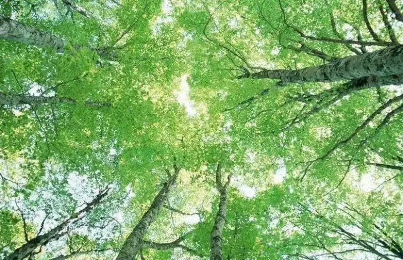
If dense leaves cover the trunk, and you want to shoot a tree with lush, strongly spreading branches, use a portrait frame, get close to the trunk, and shoot a single tree upward.
Backlight makes the leaves colorful and translucent, which looks good.
When the scene has many vertical lines, consider emphasizing them to strengthen the visual impact.
This method suits dense, straight trees such as bamboo, poplars, and birches.
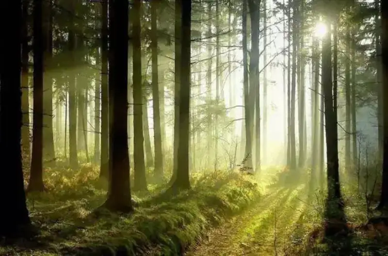
For this kind of photo, a portrait frame further emphasizes the vertical spacing of the trees, giving a sense of endless upward extension.
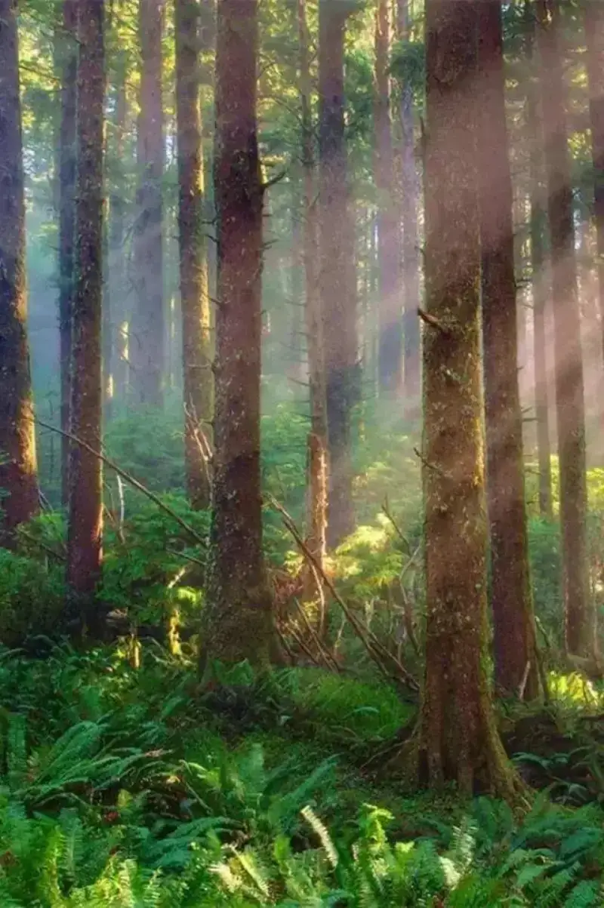
The advantage of a landscape frame is that it includes more trees, raising the number of vertical lines and strengthening their effect, and the wider horizontal space allows more flexible framing.
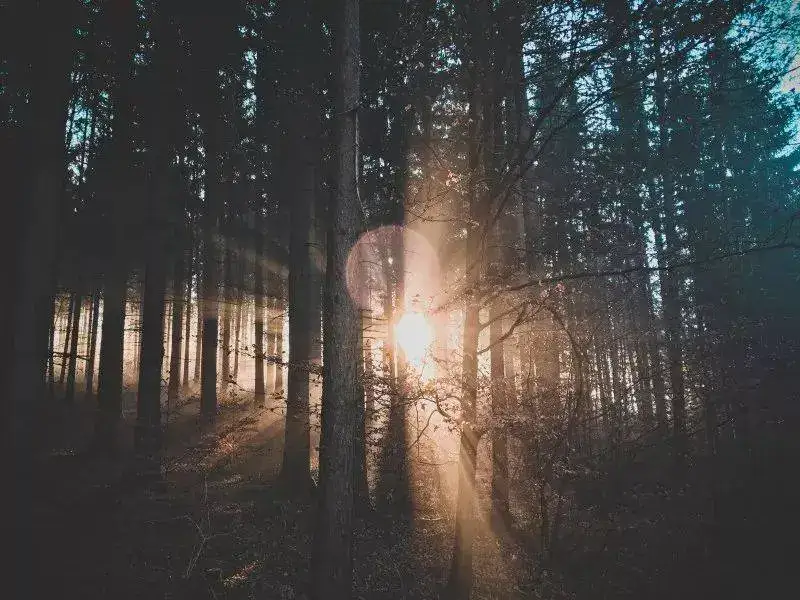
A landscape frame at eye level should include a horizon, so the vertical lines seem to rise from the ground and highlight the trees vitality. Other objects on the ground also enrich the frame.
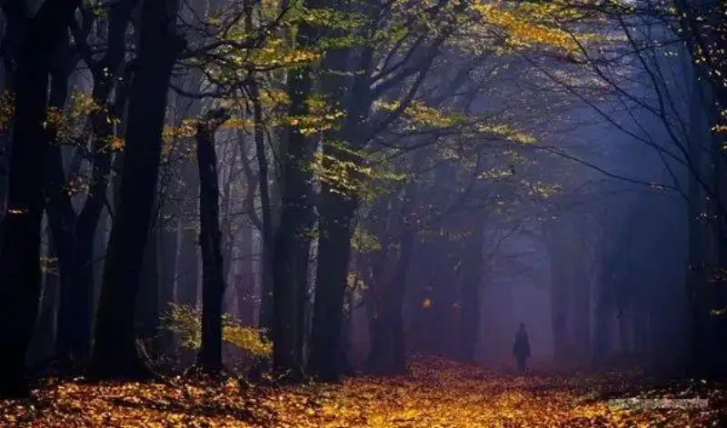
Add a winding path and use the curve to draw the viewer eye into the depth, which strengthens the sense of space. A curving road as a contrast makes the straight trunks look even more upright.
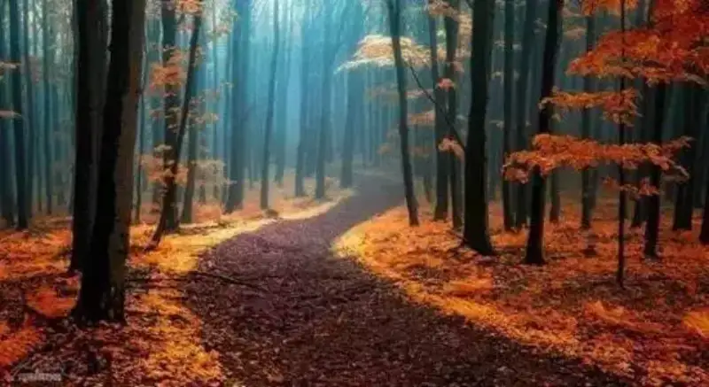
Adding a straight road produces a different effect.
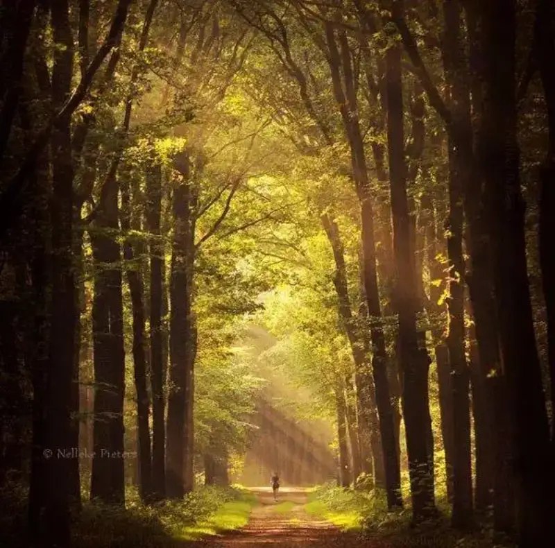
Put the road in the center. It narrows into the distance and forms a triangle, crossing with the vertical tree lines on both sides, which has strong visual impact.
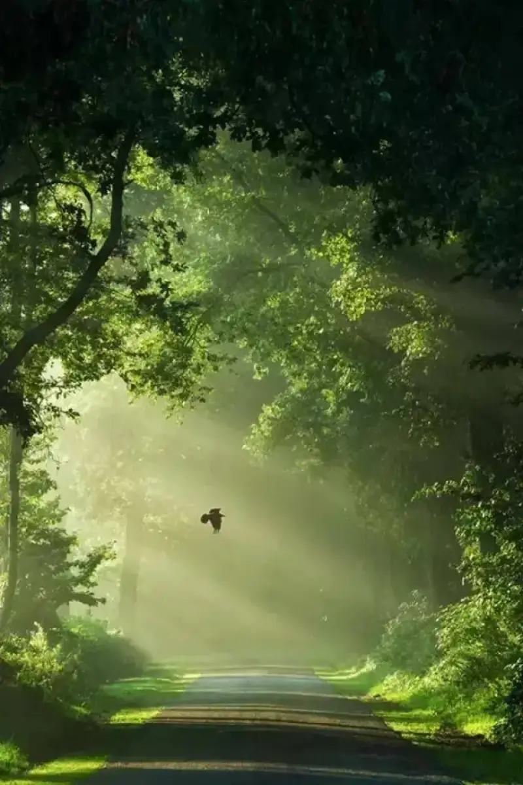
You can also change the shooting angle so the road takes up more of the frame, and the resulting leading lines catch the eye better.
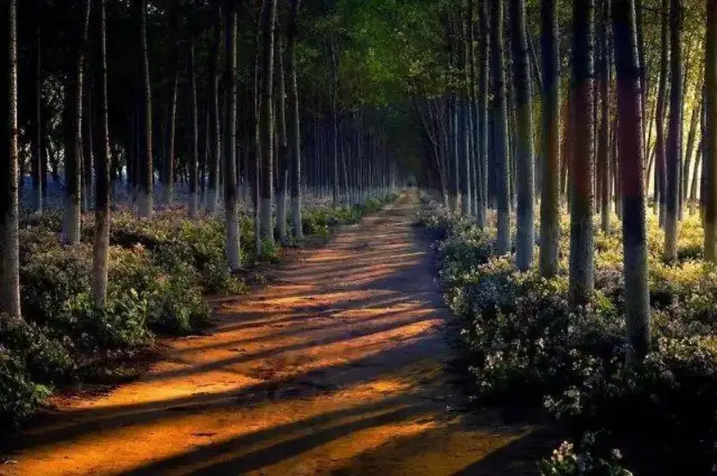
After seeing so many ways to shoot a forest, do you have any ideas?
Finally, let us look at forests shot by experts.
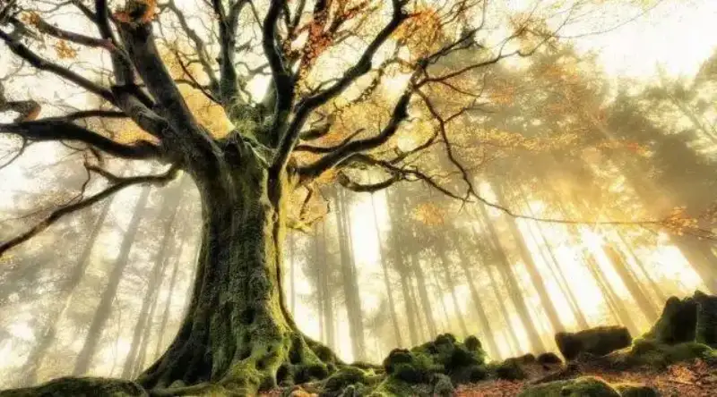
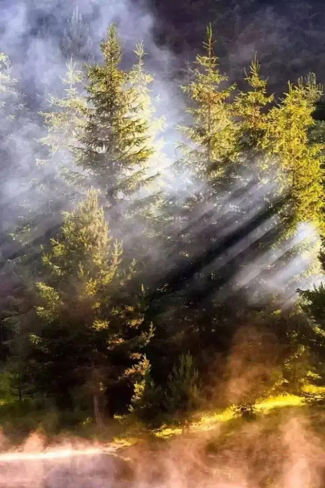
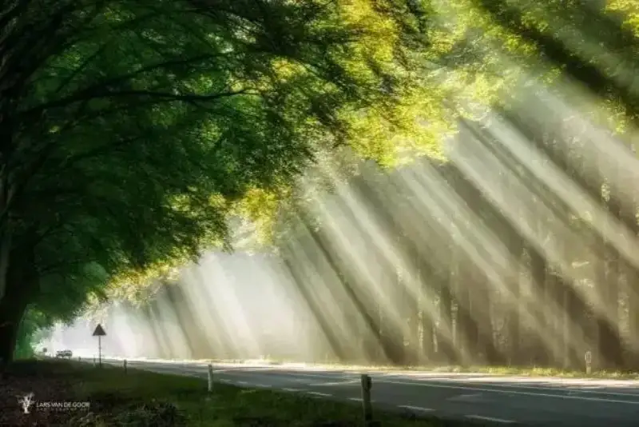
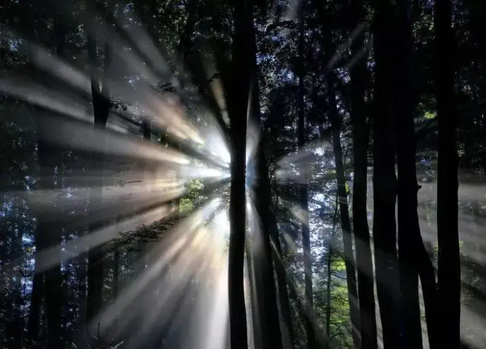
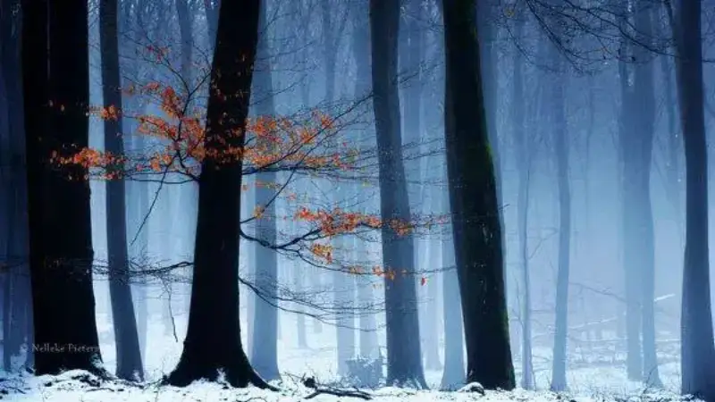
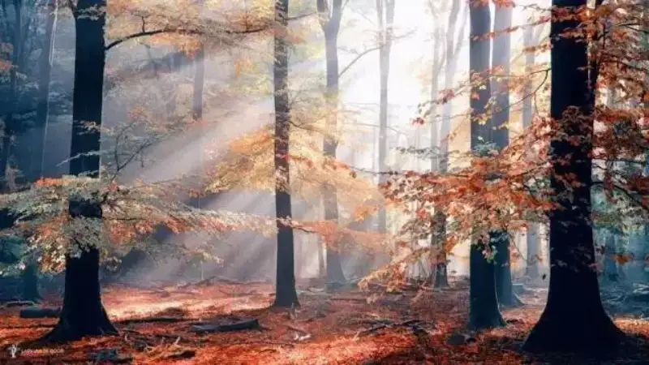
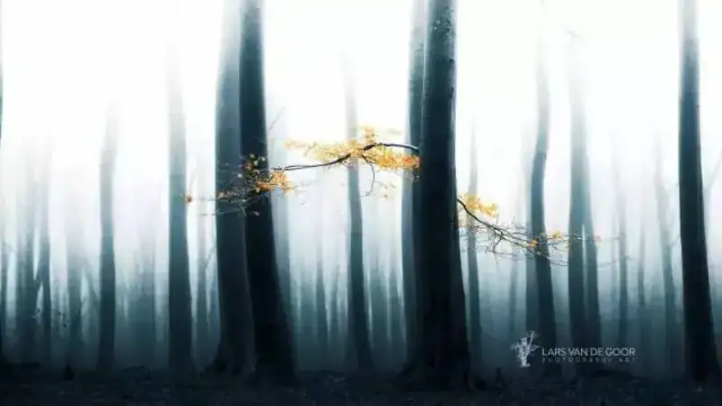
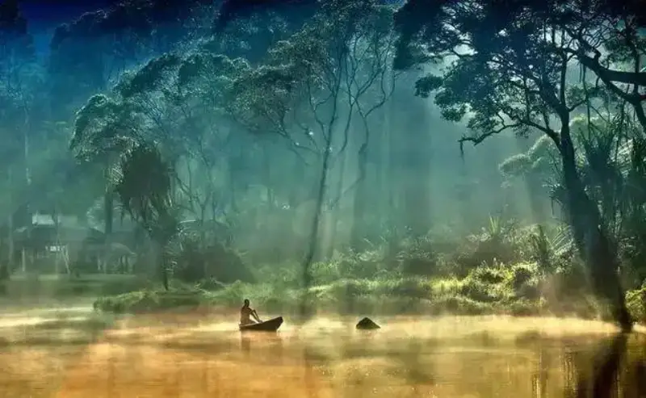